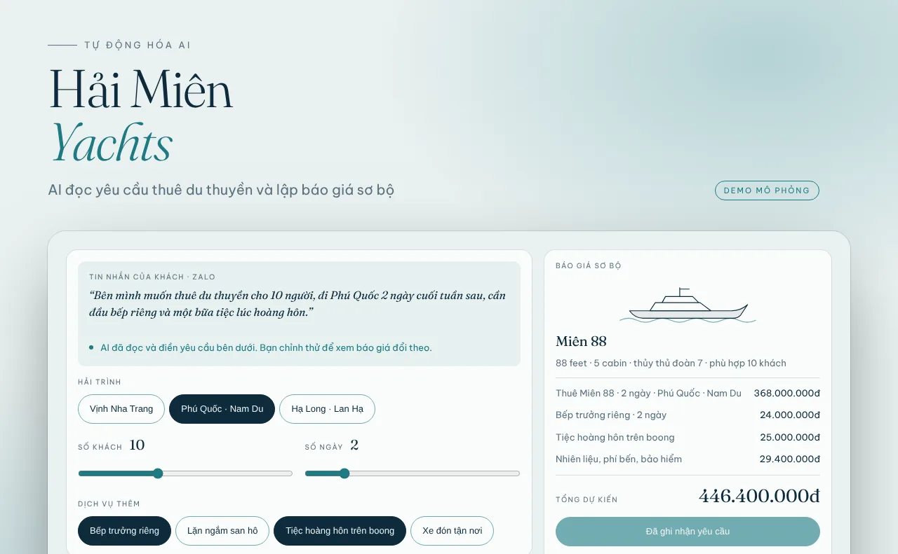

Tự động hóa AI
Quản lý kho và đơn hàng tự động cho doanh nghiệp bán đa kênh
Bán trên website, Facebook, Zalo và sàn thương mại điện tử cùng lúc thì đơn hàng rải khắp nơi, tồn kho lệch, khách hỏi đơn không ai trả lời kịp. Bài này chỉ cách gom đơn về một chỗ và để máy làm phần việc lặp lại, từ lên đơn đến báo giao hàng.

Một cửa hàng mỹ phẩm online bán trên website, fanpage Facebook, Zalo và một gian hàng trên sàn thương mại điện tử. Mỗi sáng, nhân viên mở bốn nơi, chép đơn vào bảng tính, kiểm tra kho bằng mắt, rồi nhắn từng khách xác nhận. Đến chiều, một mã son đã hết hàng nhưng vẫn được bán thêm ba đơn trên kênh khác.
Đây là bài toán điển hình mà quản lý kho và đơn hàng tự động giải được: đơn từ mọi kênh về một nơi, tồn kho trừ ngay khi có đơn, khách nhận thông báo mà không cần ai gõ tay. Bài viết đi qua từng bước, phần dữ liệu cần chuẩn bị và những điểm nên để người kiểm soát. Nếu bạn muốn xem bức tranh chung trước, hãy đọc bài tự động hóa quy trình doanh nghiệp bằng AI.
Vấn đề khi bán đa kênh mà quản lý tay
Bán nhiều kênh giúp tiếp cận thêm khách, nhưng mỗi kênh lại có cách ghi đơn riêng. Khi người làm là cầu nối duy nhất giữa các kênh, những lỗi sau gần như chắc chắn xảy ra:
- Bán vượt tồn kho. Kho chỉ được cập nhật cuối ngày, trong khi đơn đến liên tục từ nhiều nơi.
- Sót đơn trong tin nhắn. Khách chốt đơn bằng một câu "lấy em 2 hộp nhé" trong Messenger, tin nhắn trôi xuống dưới và không ai lên đơn.
- Sai thông tin giao hàng. Chép tay địa chỉ, số điện thoại từ đoạn chat dễ thiếu số, sai phường.
- Không biết lúc nào cần nhập hàng. Hết hàng mới phát hiện, trong khi nhà cung cấp cần vài ngày để giao.
- Trả lời khách chậm. Câu hỏi về trạng thái đơn chiếm nhiều thời gian của nhân viên chăm sóc khách.
Một hệ thống đơn hàng tự động gồm những gì
Hệ thống không cần là một phần mềm lớn. Với doanh nghiệp nhỏ, nó thường gồm bốn phần nối với nhau bằng một công cụ tự động hóa như n8n:
- Nơi chứa đơn duy nhất: phần mềm bán hàng đang dùng, hoặc một bảng Google Sheets có cột cố định nếu chưa có phần mềm.
- Danh mục sản phẩm và tồn kho: mỗi sản phẩm một mã SKU, số lượng tồn, ngưỡng cảnh báo.
- Các luồng tự động: lấy đơn từ từng kênh, đọc tin nhắn chốt đơn, trừ kho, gửi thông báo.
- Trợ lý AI: đọc tin nhắn tự nhiên của khách, tách thông tin đơn và soạn tin xác nhận.
Phần lớn công việc là quy tắc cố định: có đơn thì trừ kho, kho dưới ngưỡng thì báo. AI chỉ được dùng ở chỗ cần hiểu ngôn ngữ, chủ yếu là đọc tin nhắn của khách.
Quy trình tự động từng bước
Bước 1: gom đơn từ mọi kênh về một nơi
Đơn từ website và sàn thương mại điện tử thường có sẵn dạng dữ liệu, có thể lấy tự động theo lịch hoặc ngay khi phát sinh. Mỗi đơn khi về đều được gắn nhãn kênh bán để sau này biết kênh nào bán tốt.
Bước 2: AI đọc tin nhắn chốt đơn thành đơn hàng
Đơn từ Facebook và Zalo khó hơn vì nằm trong hội thoại. Trợ lý AI đọc đoạn chat, nhận ra khách đã chốt, rồi tách ra tên sản phẩm, phân loại, số lượng, tên người nhận, số điện thoại, địa chỉ. Sau đó AI đối chiếu tên sản phẩm khách gõ với danh mục SKU để chọn đúng mã. Đơn được tạo ở trạng thái "chờ xác nhận". Nếu thiếu thông tin, ví dụ chưa có địa chỉ, AI hỏi lại khách thay vì tự đoán. Phần trả lời và tư vấn trước khi chốt được nói kỹ hơn trong bài tự động trả lời khách trên Zalo OA và Facebook.
Bước 3: nhắn khách xác nhận đơn
Ngay khi có đơn, khách nhận một tin tóm tắt: sản phẩm, số lượng, tổng tiền, địa chỉ giao. Khách trả lời đồng ý thì đơn chuyển sang "đã xác nhận". Với đơn thanh toán khi nhận hàng, bước này giúp lọc đơn sai địa chỉ trước khi đóng gói.
Bước 4: trừ tồn kho và giữ hàng
Đơn xác nhận thì tồn kho của SKU đó giảm ngay. Nếu bạn bán cùng một kho trên nhiều kênh, số tồn mới được cập nhật lại cho các kênh, để kênh khác không bán vượt. Đơn bị hủy thì số lượng được cộng trả lại kho, có ghi nhật ký.
Bước 5: cảnh báo sắp hết hàng và gợi ý nhập hàng
Mỗi SKU có một ngưỡng cảnh báo. Khi tồn xuống dưới ngưỡng, người phụ trách nhận tin báo qua Zalo hoặc email. Hệ thống có thể kèm gợi ý số lượng nên nhập, tính từ lượng bán trung bình mấy tuần gần nhất và số ngày nhà cung cấp cần để giao. Người quyết định vẫn là chủ shop, máy chỉ đưa con số để quyết nhanh hơn.
Bước 6: cập nhật trạng thái giao hàng cho khách
Khi đơn có mã vận đơn, hệ thống theo dõi trạng thái và nhắn khách ở các mốc quan trọng: đã giao cho đơn vị vận chuyển, đang giao, giao thành công. Khách hỏi "đơn tới đâu rồi" thì trợ lý tra trạng thái và trả lời ngay. Đơn giao thất bại hoặc bị hoàn được báo riêng cho nhân viên xử lý.
Nguyên tắc: việc trừ kho, cộng tiền, đổi trạng thái luôn chạy bằng quy tắc cố định. AI chỉ đọc và viết tin nhắn. Tách bạch như vậy thì số tồn kho không bao giờ phụ thuộc vào việc AI "hiểu đúng" hay không.
Dữ liệu cần chuẩn hóa trước khi tự động
Tự động hóa chỉ chạy đúng khi dữ liệu nền đúng. Trước khi dựng luồng, hãy làm xong những việc sau:
- Mã SKU cho từng biến thể. Mỗi màu, mỗi dung tích, mỗi size là một mã riêng. Ví dụ son màu đỏ và son màu cam phải là hai SKU khác nhau, không dùng chung một mã "son lì".
- Một tên chuẩn và các tên gọi khác. Khách có thể gọi một sản phẩm bằng nhiều cách. Ghi lại các tên gọi phổ biến bên cạnh tên chuẩn để AI đối chiếu chính xác hơn.
- Đồng nhất mã giữa các kênh. Sản phẩm trên website, trên sàn và trong kho phải dùng chung SKU, nếu không hệ thống sẽ không biết đó là cùng một món.
- Kiểm kê tồn kho thực tế. Đếm lại kho một lần trước khi bật hệ thống. Số đầu vào sai thì mọi cảnh báo sau đó đều sai.
- Quy ước trạng thái đơn. Thống nhất một bộ trạng thái như chờ xác nhận, đã xác nhận, đang đóng gói, đang giao, hoàn tất, hủy, hoàn.
Phần này tốn công nhất nhưng chỉ làm một lần.
Những điểm nên để người kiểm soát
- Đơn bất thường. Số lượng lớn bất thường, địa chỉ thiếu, khách có lịch sử hoàn đơn: chuyển cho nhân viên duyệt.
- Đổi trả, khiếu nại. AI có thể ghi nhận yêu cầu, nhưng quyết định đổi hay hoàn tiền do người làm.
- Chạy song song giai đoạn đầu. Một đến hai tuần đầu, vẫn đối chiếu tồn kho bằng tay mỗi cuối ngày. Khi số khớp ổn định mới bỏ cách cũ.
- Nhật ký thay đổi. Mỗi lần kho tăng giảm đều ghi lại do đơn nào, lúc nào, để tra lại khi lệch.
Doanh thu và tiền thu hộ từ các đơn này sau đó cần được đối chiếu với sổ sách. Phần đó được nói trong bài tự động hóa kế toán bằng AI.
Chi phí tham khảo
Tại Dream Labs, quy trình đơn hàng nằm trong gói Tăng trưởng 15.000.000đ: gồm 3 quy trình tự động (đơn hàng, chăm sóc khách hàng, sổ sách và báo cáo), trợ lý AI đa kênh chuyển nhân viên khi cần, kết nối CRM, phần mềm bán hàng, kế toán và đào tạo đội ngũ vận hành. Gói Doanh nghiệp Liên hệ phù hợp khi bạn cần nhiều kho, nhiều quy trình hơn và dashboard điều hành thời gian thực.
| Gói | Giá | Thời gian | Bao gồm |
|---|---|---|---|
| Khởi động | 5.000.000đ | 5–7 ngàyHỗ trợ 1 tháng | Không bỏ lỡ khách nhắn ngoài giờ, nhân viên thôi trả lời lặp lại, mọi khách mới nằm gọn trong một bảng.
|
| Tăng trưởngPhổ biến nhất | 15.000.000đ | 14 ngàyHỗ trợ 3 tháng | Đơn hàng, chăm sóc khách và báo cáo tự chạy: dữ liệu nhập một lần, đội ngũ dành giờ cho tư vấn và chốt đơn.
|
| Doanh nghiệp | Liên hệ | 30+ ngàyHỗ trợ 12 tháng | Một hệ thống vận hành riêng: xem số liệu theo thời gian thực, mở rộng quy mô mà không phải tăng người tương ứng.
|
Gói Khởi động 5.000.000đ không có kết nối phần mềm bán hàng, nên phù hợp hơn với việc tiếp nhận khách và gom dữ liệu về Google Sheets trước. Ngoài phí triển khai, nên dự trù phí mô hình AI và phí nền tảng tự động hóa theo lượng dùng hằng tháng. Cách tính tổng chi phí và lộ trình được trình bày trong bài chi phí triển khai tự động hóa cho SME. Xem thêm trang tự động hóa cho shop bán hàng online, trang dịch vụ tự động hóa quy trình doanh nghiệp và bảng giá đầy đủ.
Muốn biết luồng nào nên làm trước với các kênh bạn đang bán, hãy nhắn Zalo 0934 246 420 mô tả cách đang ghi đơn và quản lý kho.
Câu hỏi thường gặp
Chưa có phần mềm bán hàng thì có quản lý kho tự động được không?
Được. Nhiều shop nhỏ bắt đầu với một bảng Google Sheets làm nơi chứa đơn và tồn kho, có cột cố định cho SKU, số lượng và trạng thái.
AI đọc tin nhắn chốt đơn có bị nhầm sản phẩm không?
Có thể nhầm nếu danh mục sản phẩm không rõ ràng. Vì vậy cần mã SKU cho từng biến thể và danh sách tên gọi khác. Đơn từ tin nhắn luôn ở trạng thái chờ xác nhận và được nhắn lại cho khách kiểm tra trước khi trừ kho.
Bán cùng một kho trên nhiều kênh thì làm sao tránh bán vượt?
Mỗi đơn xác nhận sẽ trừ tồn ngay trên nơi chứa dữ liệu chung, rồi cập nhật lại số tồn cho các kênh. Với hàng sắp hết, có thể đặt mức tồn an toàn để ngừng bán trên kênh phụ sớm hơn một chút.
Hệ thống có tự đặt hàng với nhà cung cấp không?
Có thể làm, nhưng thường nên dừng ở mức gợi ý số lượng nhập và báo cho người phụ trách. Đặt hàng là quyết định chi tiền nên để chủ doanh nghiệp duyệt.
Mất bao lâu để chạy được luồng đơn hàng tự động?
Gói Tăng trưởng triển khai trong khoảng 14 ngày. Thời gian thực tế phụ thuộc nhiều vào việc mã SKU và tồn kho đã được chuẩn hóa hay chưa.
Bắt đầu cùng Dream Labs
Đơn hàng của bạn đang nằm rải rác bao nhiêu nơi?
Nhắn Zalo cho Dream Labs các kênh đang bán và cách đang ghi đơn, tồn kho. Chúng tôi đề xuất luồng tự động nên làm trước, kèm phạm vi và chi phí rõ ràng.